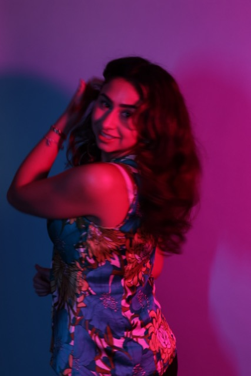

Learn more about my background, creative interests, and the approach I bring to design and storytelling.

Sara Truffi is a Toronto-based designer and a Global Business and Digital Arts student at the University of Waterloo. With a background in fine arts, she approaches design through a strong visual and storytelling lens.
Her work focuses on creating bold, expressive designs that balance aesthetics with meaning. She enjoys working across branding, illustration, and digital design.
She is interested in how design can communicate ideas clearly while still feeling personal and engaging.